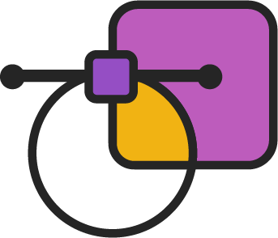
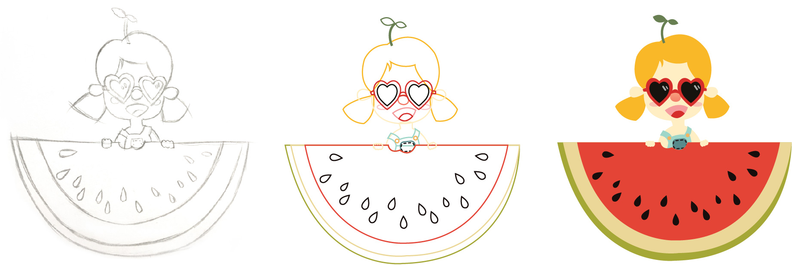
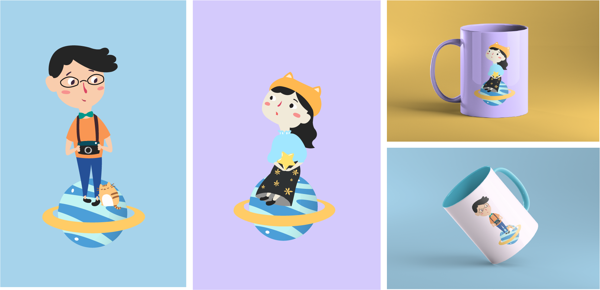
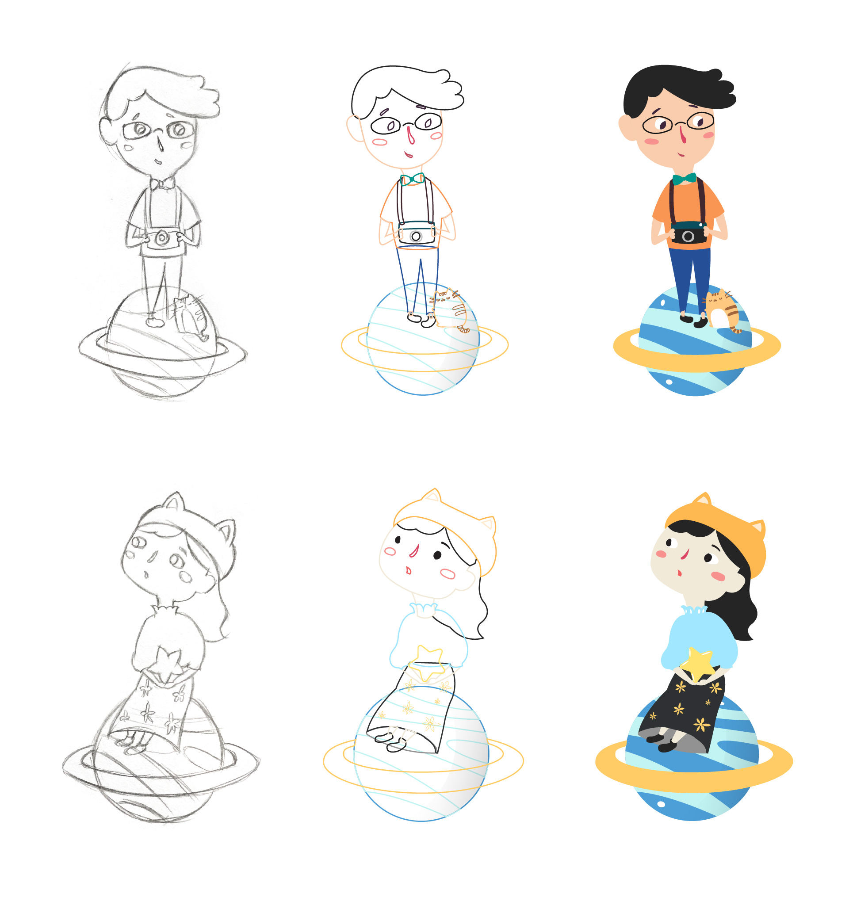

motion graphics
WoWo App
This video introduces a fake app named Wowo. I made this in the Motion Graphic class. The story is about how Wowo app can help users to lose weight.
If I Were a Superwoman
I created this video based on a dream of my childhood. I really enjoyed when movies talked about Superman and wanted to become a Superwoman. The Motion Graphic class gave me chance to create my little dream.

Illustration
MY LITTLE NIECE
I created an illustration for my little niece. She is a cute girl and likes eating watermelon. She always gave me some inspiration to create cartoon characters.

HE AND SHE
The inspiration of this illustration project is my friend who has a long-distance relationship with her boyfriend. I created a couple tha live on two different planets, but they get to see at each other every day.

